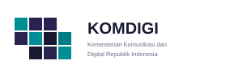

Media Sustainability Forum
MSF 2026
Membangun kemitraan yang adil antara publisher dan platform AI menuju keberlanjutan media.
Media Sustainability Forum
Membangun kemitraan yang adil antara publisher dan platform AI menuju keberlanjutan media.
Tanggal 2–3 Desember 2026 Lokasi Jakarta, Indonesia Fokus Publisher Rights · AI · Kemitraan
DaftarTentang forum
Media Sustainability Forum adalah ruang dialog nasional untuk keberlanjutan industri media di era AI. MSF 2026 melanjutkan hasil 2025 menuju kemitraan yang adil antara publisher dan platform.
Melibatkan KTP2JB, Dewan Pers, kementerian terkait, serta platform digital global untuk merumuskan arah Publisher Rights dan keberlanjutan ekosistem pers Indonesia.
Sorotan 2026
Pembicara
Galeri
Mitra
Mitra utama

Sponsor
Daftar MSF 2026 · 2–3 Desember 2026 · Jakarta · Publisher Rights, AI & keberlanjutan media
Daftar Sekarang